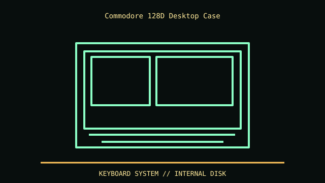

[ IDENTIFIED ENCLOSURE // COMMODORE 128D (METAL-CASE VERSION), 1985–86 ]
Commodore 128D Desktop Case
Desktop system with detachable keyboard; reference envelope is approximately 420 × 342 × 115 mm. The monitor is separate and needs independent clearance.

REVISION / FIT CAVEAT: Metal C128D differs from plastic C128DCR: board revision and floppy mechanism/drive electronics vary. Do not apply CR case or service instructions to metal-shell model. Confirm model label and chassis material.
Model-specific mechanical record
| Catalog leaf | Vintage desktop and integrated computer systems |
|---|---|
| Identity / generation | Commodore 128D (metal-case version), 1985–86 |
| Dimensions / clearance | Desktop system with detachable keyboard; reference envelope is approximately 420 × 342 × 115 mm. The monitor is separate and needs independent clearance. |
| Drive bays / mounts | Integrated 1571-compatible 5.25-inch floppy mechanism; no general-purpose internal 3.5-inch PC bay. |
| Board / chassis compatibility | C128D-specific motherboard, drive mechanism and internal PSU layout; proprietary keyboard/drive wiring, not ATX. Host peripherals use Commodore serial/IEC interfaces. |
| Revision identification | Metal C128D differs from plastic C128DCR: board revision and floppy mechanism/drive electronics vary. Do not apply CR case or service instructions to metal-shell model. Confirm model label and chassis material. |
Compatibility and preservation
C128D-specific motherboard, drive mechanism and internal PSU layout; proprietary keyboard/drive wiring, not ATX. Host peripherals use Commodore serial/IEC interfaces.
Keep keyboard cable, drive door, shielding and rear metal panel paired with this shell. Clean drive heads/mechanics only per service procedures; disconnect internal power before work.
Before transfer or restoration, photograph the complete model label, assembly/board revisions, bay/backplane identifiers and included accessories. Measure the actual specimen when planning installation or shipping; nominal envelope figures may exclude protruding feet, rails, doors or cables.
Manufacturer manuals and archival sources
- Commodore 128/128D Service Manual (1987) — Internet ArchiveModel-specific manufacturer specification, service manual, or technical reference used for the listed dimensions and mechanical configuration.
- Commodore 128D Service Manual alternate scan — Internet ArchiveSupplemental model documentation or institutional/technical archival record; use the exact product code and manual revision for a specimen.
Listings distinguish base configuration from optional drive, PSU, fan, rack and accessory kits. Do not combine maximum capacities if cages or components occupy the same volume.